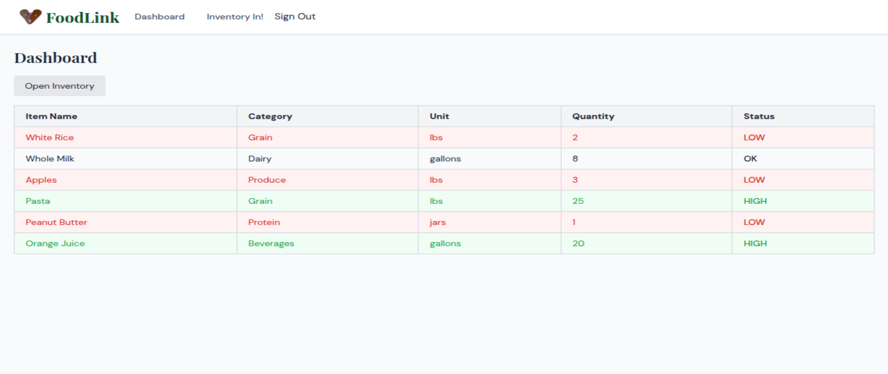
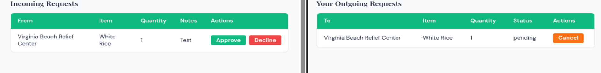
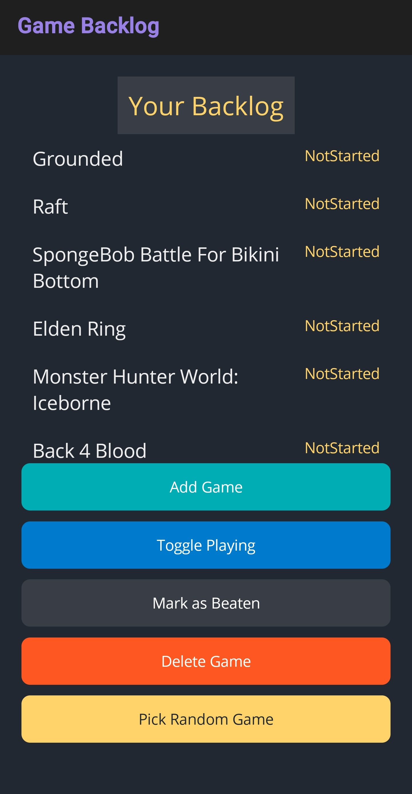
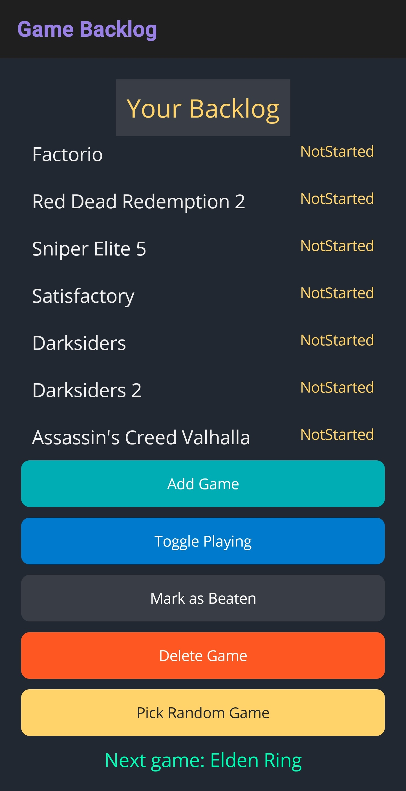
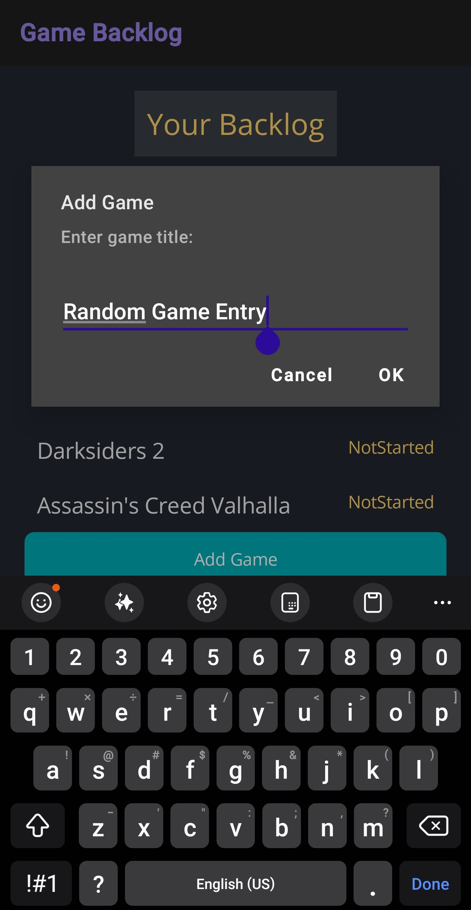
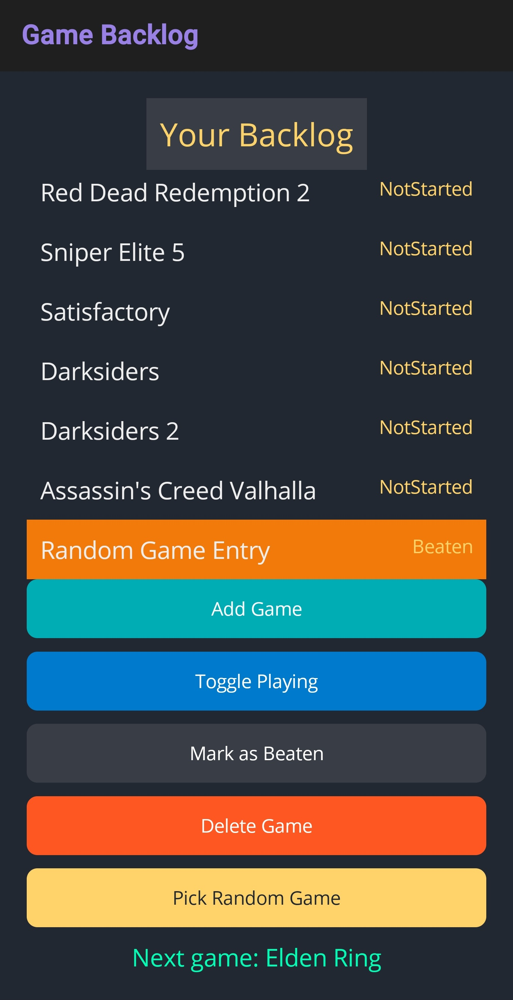
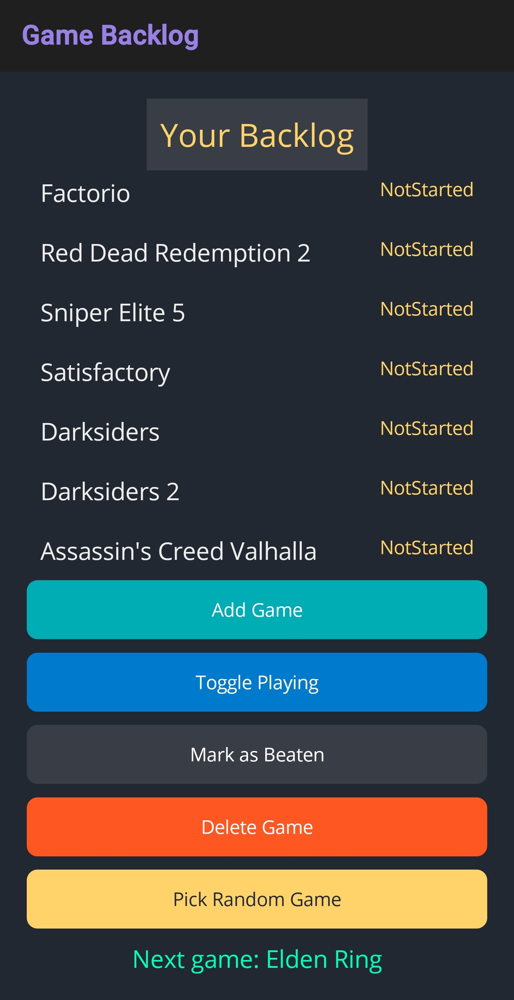

Solid State
Projects
Below are my projects that I have worked on, my role in each, and the technologies used.
FoodLink
FoodLink is a web application that was designed for local food banks to connects and share inventory together. Statistics show that there is a significant amount of food waste, ~194 million pounds in 2018. FoodLink is meant to share inventory numbers with other food banks, that way they can see what each food bank has or needs, and they can schedule pickup/drop off for said items.
My role in the project was the primary Database Administrator. I designed, implemented, and maintained the database schema and queries for the application. Whenever a teammate needed assistance with database-related tasks, I was available to provide support. While being the only memeber on the team that knew database managemnet, I mentored team members in the database and query creation and optimization.
Tech Stack
Frontend: React, Vite, React Router, Tailwind CSS, Axios
Backend: Python, FastAPI, SQLAlchemy, Pydantic, Uvicorn
Database: PostgreSQL
Authentication: bcrypt/passlib password hashing
Tooling: Bash setup scripts, WSL/Ubuntu development environment

Requests
Backlog Tracker
Game Backlog is a mobile application built in C# for managing a personal video game backlog. Users can add and remove games, track each game's status as Not Started, Playing, or Beaten, and randomly select a game from their backlog when they aren't sure what to play next.
The application uses local JSON-based persistence, allowing backlog data to remain saved between sessions without requiring a remote database, user account, or internet connection.
It supported things like:
- Adding games to the backlog
- Tracking game completion status
- Toggling games into a currently-playing state
- Marking games as beaten
- Removing games
- Randomly selecting the next game to play
- Persistent offline storage
Tech Stack
Frontend: .NET MAUI, XAML
Application Logic: C#, .NET
Data Storage: Local JSON persistence
Authentication: None
Tooling: Visual Studio, .NET SDK, Android tooling

Main Log

Random Game Seletion

Adding a Game

Toggle Playing Status

Beaten Game
